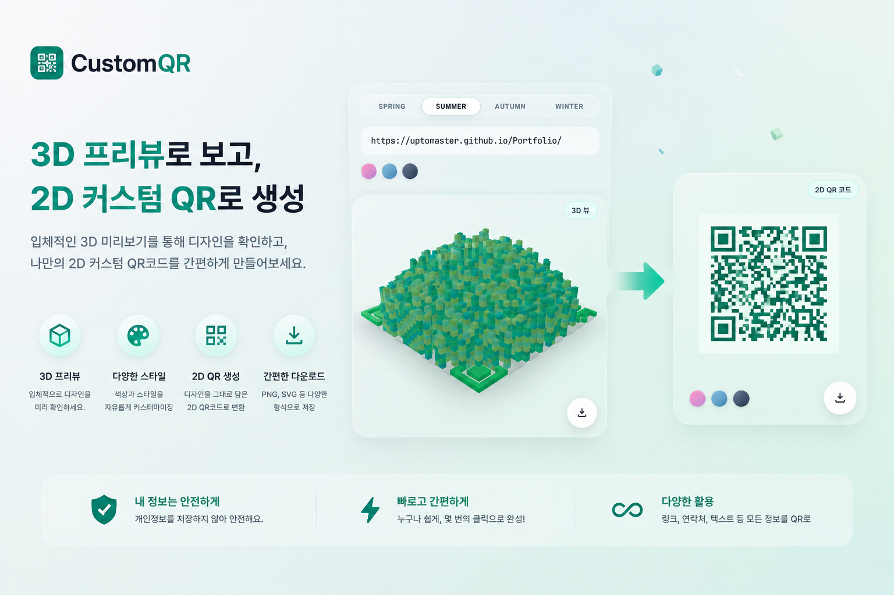
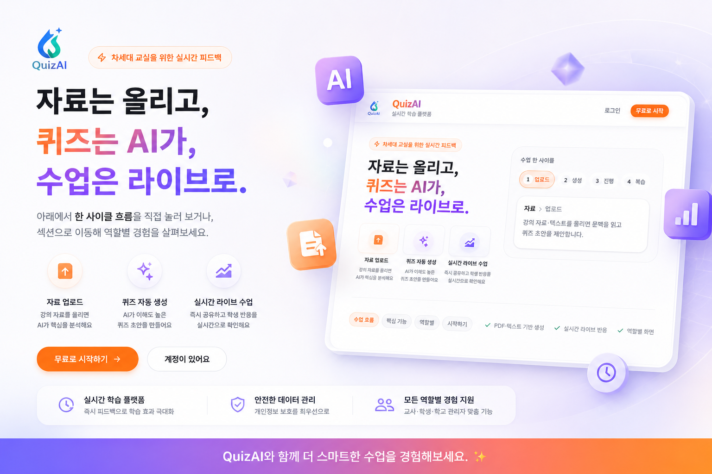

Team

밥세권 웹서비스 구축
지역 기반 재고 최적화를 목표로 한 웹 서비스에서 주문·결제·데이터 흐름을 중심으로 백엔드 핵심과 관리자 전체 기능 담당
기획, 화면 설계(Figma, 퍼블리싱), 문서화(ERD, 기능명세서), 데이터베이스, 백엔드(JSP/Servlet) 전 영역을 함께 진행했습니다.
 Portfolio
Portfolio
Archive · Selected Works
팀·보안·개인까지 기획에서 운영·배포까지 이어진 작업을 한곳에 모았습니다.
슬라이더가 아닌 아카이브처럼, 끝까지 구현하고 고친 흐름을 카드로 펼칩니다.
지역 기반 재고 최적화를 목표로 한 웹 서비스에서 주문·결제·데이터 흐름을 중심으로 백엔드 핵심과 관리자 전체 기능 담당
기획, 화면 설계(Figma, 퍼블리싱), 문서화(ERD, 기능명세서), 데이터베이스, 백엔드(JSP/Servlet) 전 영역을 함께 진행했습니다.
가상 대학 환경을 가정하고 네트워크·서버·보안 인프라를 단계적으로 설계·검증한 팀 프로젝트입니다. 팀장으로서 역설계·GNS3·문서화를 맡았습니다.

6인 팀으로 밥세권 서비스를 대상으로 웹·서버 취약점을 점검하고, DB 이중화·백업·HQ/BR 분리 등 인프라 보강까지 수행한 보안 컨설팅 프로젝트입니다.
분실물 등록·조회를 단순화하고 웹·모바일을 함께 고려해 설계한 개인 프로젝트입니다. Spring Boot API와 React, 안드로이드 연계를 전제로 구현 중입니다.



브라우저에서 밀집형 QR 코드를 만들고 Three.js(react-three-fiber)로 3D 블록 프리뷰를 본 뒤, 스캔 가능한 2D PNG로 내보내는 프론트엔드 중심 개인 프로젝트입니다.

쑥스러운 첫 마디부터 정서적 연결까지—스토리·미션·기록을 설계하는 부모 자녀 소통 서비스를 기획 중인 UMC Plan 프로젝트입니다. 구현 전 단계이며, 팀 모집은 리크루팅 페이지에서 진행합니다.